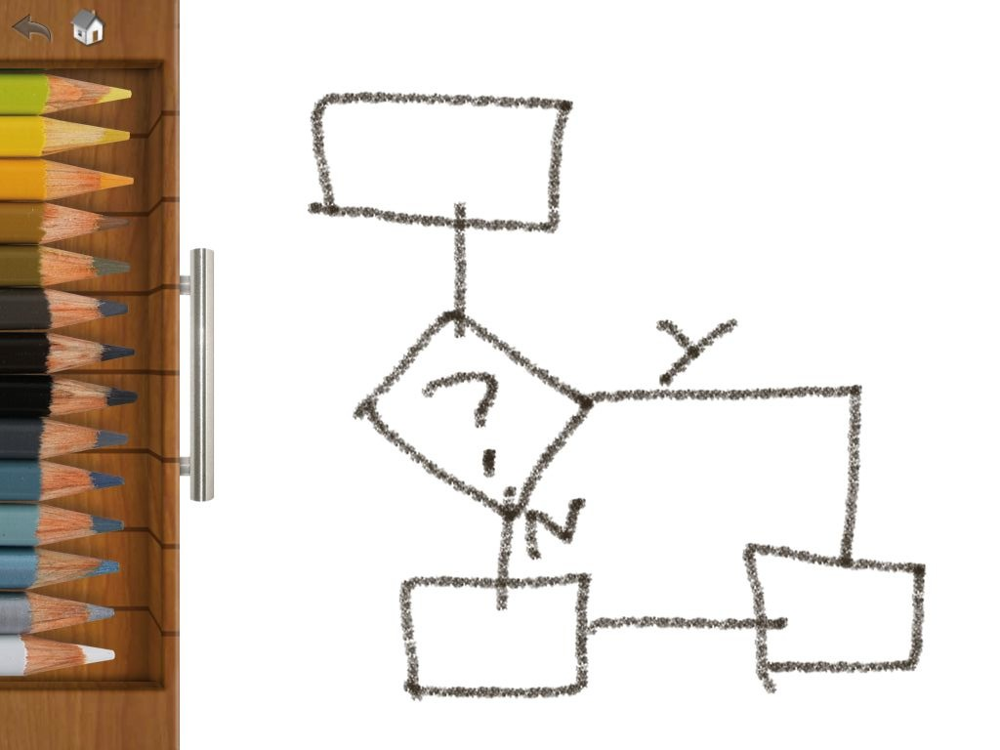
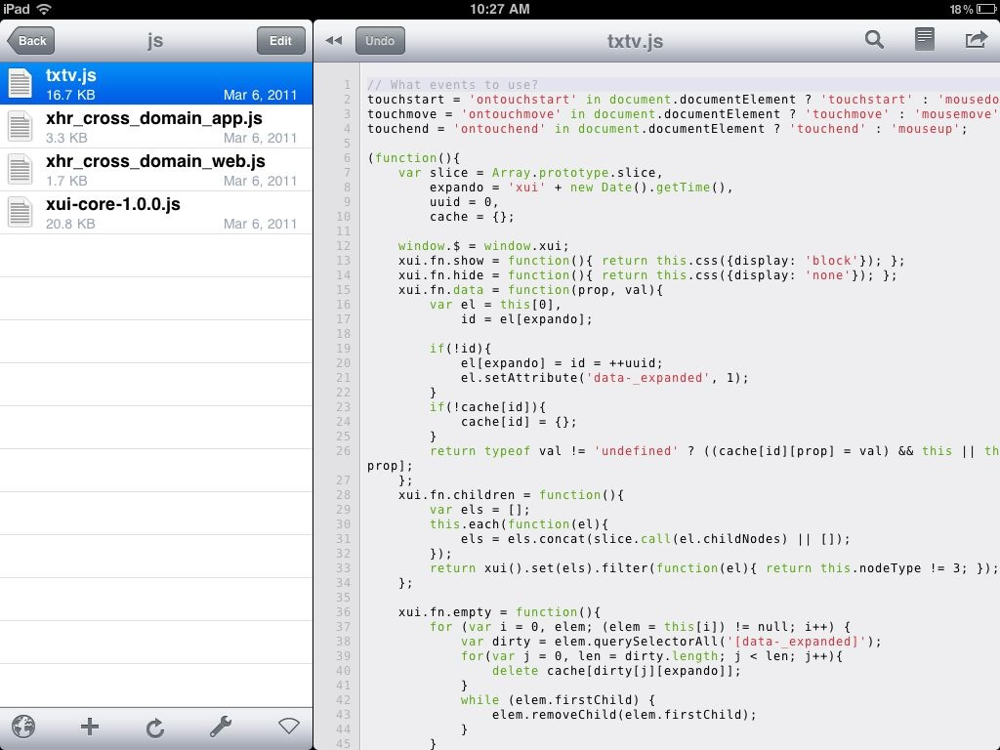
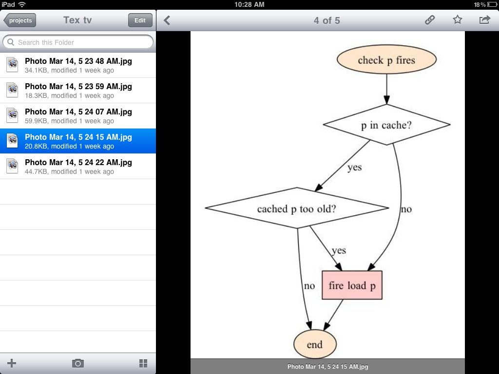

While waiting for my younger brother to post some long-promised content, I thought I'd give a quick overview of our design flow iPad usage. When I first got my pad, I bought it mainly as a testing device, not really anticipating to use it as an actual productivity tool. Because let's face it, in what fields could it possibly bester my trusted MacBook Pro?
In quite a few, as it turned out! Obvious as it might be to the rest of the world, a touch screen is a very different input device compared to a touchpad and keyboard. And, as I eventually realised, it is especially well suited for sketching and doing mockups.
Our design process
We've always done quite a bit of planning before we got our hands dirty in the editors. This planning can take many different forms; napkin scribbles, phone conversations, whiteboard doodling, and sometimes an actual UML diagram.
This initial sketching would cover all aspects of the application-to-be: program flow, data structures, use cases, and UI layout. Mostly we'd go through several iterations, and only when things began to settle down a bit did we fire up the editors.
This flow remains the same, but what the iPad has allowed us to do is to digitize the first part. Doing those things on the computer was never an option; it's simply too slow! There are plenty of good mindmap/diagram/software-planning programs for MacOS, but none that can keep up with the speed of thought.
On the iOS, it turned out, it's a different story, all thanx to the touchpad. Using this input device, you can sketch and mock-up almost as fast as you can think it!
We never thought of our disorganized doodling as consisting of different sketching paradigms such as mindmapping, flowcharting, etc. It was all something inbetween, crossing haphazardly back and forth between approaches. Now, using iPad apps instead of napkins, this process has broken down into several main areas:
- mindmapping - organizing thoughts together
- flowcharting - mapping the flow through a single interaction/function/event chain
- prototyping - mocking up user interfaces or parts thereof
- doodling - simple free-hand sketching
- codehandling - reading existing code bases
- filesharing - using cloud file handling services
And here follows a quick run through our favourite tool for each of these areas!
Mindmapping with iThoughts
First off: mindmapping. This can be used initially just to sort app ideas together, but also in a later stage to map out the ingredients of the app: UI parts, classes, globals, etc. In essence this is our rebellious interpretation of a UML class diagram, I guess.

To this end, our favourite tool has come to be iThoughts HD. There are a lot of various options, of which I've tried most, but iThoughts somehow just resonates with me. Some favoured features are:
Organisation of maps: a fundamental feature, you might think, but it is missing from a surprisingly huge number of mindmapping apps. iThoughts lets you organise maps in folders and subfolders. It is also very easy to base a map upon another, copy them, etc. Excellent export options. And with excellent I mean that it supports our file handling system of choice, namely Dropbox. It can synchronize automatically to a map in the cloud, and also of course export into other formats. Brilliant UI shortcuts throughout, minimizing clicks and gestures. It is very evident that the developers have invested lots of time in making the mapping process as smooth as possible. Perhaps not a feature, but the maps are, with very little effort, rather beautiful! Not a factor to sneer at, and a potential client frequently reacts much better to an iThoughts-generated pdf than to our previous napkin-based charts… Flowcharting with Instaviz
When zooming in a bit at the process and planning out a user interaction (or even a specific application function), flowcharting is an excellent way to visualize your thoughts. Again there are a multitude of options of which I've sampled most, but the one that stuck out from the crowd is Instaviz.

Instaviz boasts having an advanced layout algorithm developed over the course of decades, and this immediately shows. Not having any control of the actual layout and position of boxes takes some getting used to, but once you have it's really convenient. The algorithm will always (so far completely without exception) find an excellent way to organize the boxes, so that the flow is easy to follow and as few connections as possible cross each other.
Now, there are some irks; Instaviz has no chart organisations (they're all just lying in one huge list, meaning you have to prefix the names with project and milestone in order to navigate), and perhaps worse, there is no way to select more than one box at a time. There are a few other rough edges in the UI as well, such as having to delete the default text in a label, etc.
But even so the good outweigh the bad, and the app is still in development so it will only get better from here. Heartily recommended!
UI prototyping with Omnigraffle
For laying out the user interface, I've fallen in love with Omnigraffle. In comparison its a hugely expensive piece of software, but in essence you get what you pay for. Omnigraffle is a hugely powerful program, and once you've mastered its (intuitive) interface you'll be mocking up interfaces in no time at all.
Perhaps even more important - through Omnigraffle's excellent multiselection tools it is very easy to manipulate an existing mockup, enabling to try out different layouts as quickly as you can think them.

Omnigraffle is based around the concept of stencils, which work a bit like LEGO bricks; there are lots of different pre-made parts (like for instance the various parts of the iOS UI) which you can import into your diagram, letting you quickly scaffold your prototype.
And of course it is also easy draw free-hand objects, when there isn't a stencil within immediate reach that suits your needs.
An indirect negative note: Omnigraffle sells itself also as a flowchart maker, and I've seen examples of mindmaps done with it, too. In both of these fields, however, Omnigraffle really cannot compete with neither iThoughts nor Instaviz.
But, when it comes to prototyping, it really is a beast, and in my mind the rich feature list and easy of use justifies the hefty price tag.
Doodling with Drawing Pad
Charts and mindmaps and UML and OOAD and software engineering in all its glory - sometimes you just need to doodle! When overcome by that urge, our favourite tool is Drawing Pad. Super-easy to use, yet still surprisingly powerful.

There are several more professional drawing apps out there, but for us that kind of misses the mark - our doodle needs are, per definition, basic and immediate, and thus we need a basic and immediate app to fulfill them. Paint instead of Photoshop, so to say. Drawing Pad fits this role perfectly
Coding and code-reviewing with Textastic
As initially stated, we first sketch and doodle and map on the iPad, and then move on to coding on our MacBooks. Sometimes, however, you'll want to hack down some code while doodling, or maybe quickly read/review some existing code in order to know how to proceed with the current flowchart. Then it is convenient to have the possibility to do so directly on the iPad, and not having to change devices.

When this happens, we turn to Textastic. Expensive in comparison to its competitors, but again, you get what you pay for. A very nice interface and excellent Dropbox support has won us over.
But, isn't coding on the iPad rather cumbersome? Yes, definitely, even if Textastic does what it can to easify the experience through extra characters on the keyboard, etc. But the point isn't to compete with coding on the computer (which it could never do), but to provide an ok experience when some instant coding needs to be done in connection with some doodling in the other apps.
And, as stated above, we frequently find ourselves wanting to read some specific code while planning, and to this end Textastic works perfectly.
File sharing with Dropbox
Ok, so focus was on the design process, but now I've mentioned Dropbox too many times not to give it its own headline. Dropbox is a brilliant tool for sharing files, and especially well suited for the development flow consisting of all of the above mentioned apps.

We'll make a Dropbox folder for our project, and then from the other productivity apps we'll export the result to that folder. For the apps that don't support Dropbox (like Instaviz) we export a photo, which we can then put into the folder using the Dropbox app.
What we're still missing
Perhaps it doesn't sort directly under the desing flow headline, but we still haven't managed to settle for a project management / todo list application. This definitely impedes us, especially since neither me nor my brother are the most organised people to begin with. So, if you guys out there have any favourites, please try to sell us on them!